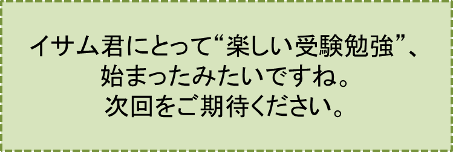

2センチの隙間-PART3-
『わが回想：水遣りの女神』の巻
笠原正雄
どういうことでしょう！
生垣の近くで、ヤツデやカイヅカイブキなどの緑の樹々に見え隠れしながら、目に飛び込んできた人物。それは老貴婦人ではありません。何と、14,5才ぐらいの若い女性の姿です！
“えっ！ 何かの間違い？”
私は、はじかれたように隙間から飛びのきました。
隙間からは、水遣りの音垣根や植木の沢山の葉っぱ達に勢いよく当るホースの水音が、我が耳に入ります。
この音に誘われるように、隙間から外をもう一度のぞき見します。
“間違いではありません！”
目を皿のようにして更にもう一度確認します。
若い女性の姿をしっかり確認した瞬間私は、再び電撃に打たれたように大きくはじかれ、ベッドの上に大の字に横たわってしまいました。
“一体どういうことなの、これは！？”
“貴婦人とは全く違う！すっごい若い女の子じゃないの！”
こんな自問をしながら、目に焼きついた14、5才の女の子、真っ白な地に朱色のストライプが入った印象的なブラウス、そして薄いグレーのスカートという女の子の姿を、ベッドに横たわったまま何度も何度も瞼（まぶた）に再生します。
“今までこんなに美しい女の子を見たことがあっただろうか”
昼前ようやくベッドから起き上がって椅子に座りましたけれど、天井や壁を空（うつ）ろな目で眺めたまま、ぼんやり過ごしていたでしょう。勿論、隙間から隣家の様子を伺おうともしませんでした。
この日午後の半日、私の心境がどんな風だったのか、残念なことですが全くの霧の中、しっかりとは思い出すことが出来ません。
“蜃気楼のように空しく消えてしまうかも知れないなぁ、あの女の子”
“いや消えて当然だよね。老貴婦人があんな綺麗な娘っ子に変わるってことは、起こり得ないことなんだから”
こんなことを繰り返し繰り返し反復していたのではないでしょうか。
翌日の朝早くから水遣りが始まるのを待ちました。大きな不安と大きな期待とが入りまじった気持で、若い女性が垣根の向うに現れるのを待っていました。
「いつもの老貴婦人かもしれないなぁ」
時間が経つにつれそんな不安が胸を大きくよぎり始めます。
心配ご無用でした！ 昨日（きのう）私の心を一日中支配していた若い女性が、垣根のそばに現われ、キラッキラッと輝く早朝の太陽の光に、目を細めながら水遣りを始めたのです！
今目にする彼女のまぶしげな顔、苦痛にゆがんだような顔が、彼女を一段と美しく益々魅力的な存在にしているように感じました。
“美しい！ こんなに美しい女性が世の中にほかにいるだろうか”
私は小さく小さくささやくような声でつぶやきます。
それにしてもまぶしそうに顔をゆがめ続けています。
7月の夏の空、早くも天高く駆け上がったお日さまの光に微笑んでいるのか、しかめっつらをしているのか判断に迷います。
にも拘（かか）わらず葉隠れに見える若い女性の表情には、強力な磁石のように人を強く引きつける美しさが漂（ただよ）っています。
ふと私の脳裏に
「ひそみにならう」
という7文字が浮かび上がりました。
その昔、美人との評判がとても高かった中国の女性西施（せいし）が、病（やまい）に臥（ふ）しその苦しさに顔をしかめた表情が、またとなく美しかったので、多くの女性達がその苦しげな表情の真似（まね）をしたという故事、このことが今まさに目の前に起こっていると私は思いました。
ホースから勢いよく飛び出す水が、ヤツデなどの大きな葉っぱに当たって跳ね返えるためでしょうか。それともお日様のためでしょうか。今朝は顔をしかめ続ける彼女です。
しかしそんな顔であるにも拘わらず、より一層魅力的な人を強く引き付ける美しさ、類稀（たぐいまれ）な美しさを感じます。不思議なことですね。
この日は昨日のようにベッドに横たわることはありませんでした。
“明日はまた老貴婦人かも知れないなぁ”
という不安はありましたけれど、先程目にした光景が光のように心の中に差し込み明るくしてくれたのでしょう。
机の上で埃（ほこり）を被（かぶ）ったままになっていた教科書を久しぶりに広げました。
高校時代大好きだった数学の教科書です。数ページをめくり例題を一つずつ復習してみました。
懐かしいとても懐かしい友人達に再開したような喜びが、胸一杯に広がります。
3日目、4日目、5日目も早朝6時過ぎには、若い女性の姿が雨戸の隙間を通して観察できます。
南側の窓の隙間は少しずつ広がり、5日目には3、4倍も大きく広がったことでしょう。
まるで朝を告げる女神のように庭先に現れる若い女性。私にとって今や完全に神秘的な存在となった女性。
“神様であるはずはないよなぁ。これは正真正銘現実の話なんだよなぁ”
“ひょっとすると何かの事情で老夫婦と一緒に住むことになったのかもなぁ”
こんなことを止めどもなく考え続けます。
毎日毎朝、今や10倍、20倍にも大きく開け放たれた隙間から覗（のぞ）き見る私の目の前に若い女性は現れ、希望の光のように輝きます。
この光彼女が垣根から姿を消してしばらくすると、いつものことですが心細いロウソクの光のように消えてしまい、かわりに灰色の不安を一杯に含んだ暗雲が目の前にゆっくり降りてきます。
こんな不安な気持ちをすっかり取り除き、消し去ってしまおうとばかりに南側の窓を半分ほど大きく開放し、高校入学時に両親に買ってもらった総栃製の机、まるで会社の重役さん用の机のような感じの大きな勉強机を窓側に引きずってきました。
ホースで水遣りをする彼女が、朝早くから勉強に励んでいる私の姿に気付いてくれることを期待したからです。
翌日期待に胸を膨らませて早朝5時過ぎから勉強を始めました。
“気付いてくれますように……”
神様に祈るような気持で彼女を待ちます。
あぁ、しかし、一体どうしたことだったのでしょう。大好きな数学の問題を解くために、ほんの一瞬だったでしょうけれど、我を忘れてしまったのです。
夢中になって、数学の問題に深くのめり込んでしまいます！
このため、いつも通りに始まったホースでの水遣りの音にもしばらく反応しなかったのです。
植木の葉っぱ達に当って勢いよく跳ね返る音が、早く“麻酔”から覚めなさいとばかりに強く促したに違いありません。はっと気づき大慌てで飛び上るようにして、彼女の方向に視線を向けました。
慌てふためくそんな感じの動きに、垣根近くで水遣りに励むいつもの若い女性は気づいたのでしょう。私の方に向ってしっかり視線を向けます。
このときです。何と何と何と！ 彼女はにっこり微笑むようにして軽く会釈（えしゃく）をしてくれたのです。
予期せぬ微笑！ 私は反射的に軽く手を挙げ小さく振ります。水遣りの女神と信じる若い女性との、初めての心の出会い、嬉しい嬉しい飛び上がる程に嬉しい心と心の出合いです。
窓越しの挨拶は急速に内容が豊かになりました。数日もすると窓から半身を乗り出すようにして
「おっはよう！ 気分は如何！？」
との問いかけに
「最高よ！ 貴方（あなた）は如何？」
と満面の笑みを浮かべながら、彼女は言葉を返します。
「OK！ OK！ 気分OK！ 満点さ！」
私も元気溌剌（はつらつ）大きな声で応えます。
こんな窓際での会話が、庭に下りて垣根を挟んでの会話になるのに日数はかかりませんでした。
白の地に真っ赤なストライプのブラウス、グレーのスカート、いつもの服装の彼女です。しかし不思議ですね。見る度に彼女は、フレッシュな印象わくわくするような喜びをもたらしてくれます。
若い2人は、人目をはばからず会話をするようになったのです。
今覚えている限りの最初の会話はこんな内容だったでしょう。
「君の名前、教えてくれない？」
「私の名前？ “賀集あや乃”と申します。でも私“あや乃”って呼んでもらうより英語の頭文字をとってA子って呼んで欲しいのよ」
と言ってから、
“くっくっくっ”
と無邪気に笑います。
「貴方のお名前お聞きしてもよいかしら？」
と私の顔をしっかり見詰め、尋（たず）ねます。
「僕の名前？ イサムです。竹野イサムです。よろしく」
こんな簡単な会話だったでしょう。
しかし垣根越しの会話も、その翌日あるいは翌々日には早くもこんな会話になりました。
「A子さん、君、何年生？」
「高校3年生よ。来年はお受験よ！」
“14、5才かな？ と思っていたのに高校３年生とは”
ほんの少し驚きを感じます。いや、いや、ゆっくり感じている暇（ひま）はなかったでしょう。殆ど間髪（かんはつ）を入れずに、
「イサムさん、貴方（あなた）は何年生？」
との質問が返されてきたのです。
どきっとし、一瞬たじろぐ質問です。
けれど不思議なものですね。彼女の顔を見ていると、心が和らぎ希望の光のようなものを感じます。何もかも打ち明けてしまおう、こんな気持ちになります。にっこりほほ笑む余裕すら見せて口を開きます。
「うーん、ちょっとだけ辛（つら）いなぁ。僕、高校６年生さ！」
と明るく答えます。A子と名乗った女神は目を丸くします。
「浪人生活3年目ってわけさ」
と答えます。
目の前に現実の人として立っている水遣りの女神は
“くっ”、“くっ”、“くっ”
と笑いながら
「じゃ、“イサムさん”じゃなくて、“お兄さん”と呼ばせていただくわ。お兄さん！ 私のことを“A子”で呼んで下さいね」
と続けます。
そして優しく顔をほころばせながら
「そろそろ6年生で高校を卒業しなけりゃ、だめよ、お兄さん！」
A子はしっかりした口調で言葉を続けます。
「私はね、高校3年生で卒業するわよ。来春は大学1年生。絶対にそうよ！ 近くの舞学園大学のピッカピカの1年生。私しっかり目標を決めているの」
A子は口元に笑みを浮かべながら、自信に満ちた表情で言葉を続けます。
「私の希望進学コースは情報創造学科なの。コンテンツ創造について学び研究するつもりよ。外交官の父が“これからはコンテンツの時代”と繰り返し言うものだから」
A子はふうっと大きくため息をついだ後、自信に満ちた表情で言葉を続けます。
「私達の未来に、“薫り高い情報文化の世界”を創造してみたい。私の夢よ。大学に入ったら、この目標に向って一生懸命勉強するわ」
A子の自信に満ちた言葉の数々、そして何よりも進学先が私と同じ舞学園大学の情報創造学科であることに、少なからず動揺します。この動揺、隠すことは無理なことでした。
A子ははっと気付いていたのでしょう。顔を曇らせながら
「お兄さんの進学先、教えていただいてよいかなぁ……。まだ決めていらっしゃらないの？」
と不安顔で尋ねます。
その不安げな顔を見ると、目の前のA子が実の妹のような存在、たまらなくいとしい存在に思えてきます。
何もかも心の中を正直に打ち明けよう、そんな気持に私を駆り立てます。
A子と全く同じ舞学園大学の情報創造学科を受験すること、そして、この学科を受けるべしという両親の考えに背くことは、殆ど不可能であることをA子に打ち明けました。
同じ大学それも同じ学科を受験するということにショックを受けた様子は、A子にはみじんも感じられません。それどころか２人そろって合格するという夢を、お互いに手を携(たずさ)えて頑張りましょうと、目を輝かせながら語りかけてきます。
2人が、この後で交わした会話、それは思い出す限りですが、以下のようでした。聞いていただきましょう。その前に一言（ひとこと）です。
私は国語が苦手、A子は数学が大の苦手です。多分これは、心理的な問題でしょう。
私は国語そしてA子は数学、それぞれの苦手意識を克服することこそが、来春の夢を100パーセント叶（かな）えるための必要且つ十分条件と言えるでしょう。
以下に紹介させていただく会話は、今から考えても、とても大きな意味、我が人生を左右するような大きな意味を持っていたのです。
このお話、少し寄道（よりみち）になりますのでコーヒーブレイクでのお話と致しましょう。
------------------・------------------
♪♪♪♪コーヒーブレイク♪♪♪♪
「僕ね。どうしても国語が好きになれないんだ。
第一、例えば万葉集など、今の時代に習って何か意味があるのかなぁ。何かしら昔から教えていることなので、惰性で教え続けているんじゃないかなぁ」
この言葉に彼女は即座に強い口調で反撃です。
「今の時代だからこそ学ぶ意義があるのよ！」
この予想外の強い反撃に私は口を閉ざします。
「万葉集を読んでいると目に浮かんでくるのは、“緑”、“緑”、“緑”の野山よ！ 森の樹々よ！ 自然よ！ 一点の汚れもない清流よ！ そんな万葉の時代の世界が目の前に広がってくるわ」
「今の私達をとり囲んでいる自然はどうなの！？
私がこの前まで住んでいた家の近くの神社の森の樹々達も、最近何か疲れているような感じだったわ。元気がない。私そう思う」
「沢山の近代的な高層ビルが神社の近くに建ったことで、地下水脈がすっかり変わったのよ、きっとそうよ。万葉集を読むと、現代がしっかり見えてくるんじゃない？」
A子は目を輝かせ一層凛（りん）とした表情、まるで私を真っすぐ睨みつけるようにして、厳しい口調で語りかけてきます。
にも拘わらず、その顔がたまらなく美しく、魅力的に見える、西施のひそみ（眉をひそめること）に、美しさを感じるあの心理状態でしょうか。
「万葉集を読んでいると、日常お世話になっている“道具”というものは、もともと精神的存在として編み出されたものなんだなぁと思い考え込んでしまうのよ」
とA子は強調します。私達現代を生きる人達は、常に心しなければならないことよと、繰り返し主張します。
A子は、ふうっと大きくため息をついて続けます。
「例えば万葉時代、命を絶たれる最期（さいご）の地、紀州に護送される悲劇の皇子有馬皇子が、道中で詠んだ歌この歌が、しっかりこれを教えている」
と私の顔を真正面から見て話します。
「家にあれば笥（け）にもる飯（いい）を草枕 旅にしあれば椎の葉に盛る」（巻第二、142）
は正にこのことを象徴する内容の歌だと、彼女はほほ笑みを浮かべて続けます。
「護送される身である皇子ご自身に対しては、食べ物を直接手で取って食べるようなことが許せても、一縷（いちる）の望みを託す“神”に対しては、そのようなことはできない。家に居れば美しい容器に祭って捧げることができるのに、道中の我が身には無理なこと。
しかし神様に対しては、たとえ椎の葉であっても道具として使って差し上げたくなる、という有馬皇子の心の動きに、私達はもっと感動しなければ……」
こんな内容の話を熱っぽく語り続けます。
「このIT時代だからこそ“道具”というものは、本来心の動き、ヒトの豊かな感性によって生み出されもたらされたものであることに、もっと大きな注意を払わなければならない」
と、A子は目を輝かせながら語り続けます。
“万葉集を読むと現代社会が分かってくる。生き方が分かってくる。このことが示すように国語は絶対に大切な科目、面白い科目”
と彼女は強調します。一息つくとにっこり笑いながら私に訴えます。
「お兄さん、私、どうしても「数学」が好きになれないのよ。味気ない数の羅列。無味乾燥な砂漠の世界のように感じられるの。国語に比べると、深みがない。全く魅力がないわ」
A子は“ふうっ”と溜息をついて続けます。
「でも大学に入るには、数学は必要でしょ。だから致仕方なく取り組んでいるの。私……」
彼女は寂しそうに笑います。
私はその笑いに口元をほころばせ胸を張って答えます。
「違います！ 全然違います。数学の世界は精神の世界。深いとても深い世界だと僕は思います。
哲学で有名な下村寅太郎先生がおっしゃっていることだけど、僕達が習っている無限大、無限小は、古来の神秘思想つまり“神は最大にして最小である”という思想なんだよ。びっくりするよね、本当に」
A子の驚いたような表情に優しくにっこり笑って話を続けます。
「下村先生は数学の歴史は単なる「数学史」ではなく、人類の「精神の歴史」とおっしゃっている。
精神の歴史であったことはすなわち命をかけた歴史でもあると、先生は強調されているんだ」
ここで一息ついて続けます。
「例えばね、無限について論じた数学者ブルーノは、異端者としてローマで火刑に処されている。火刑に処されたのだよ！どうしてだったんだろうね」
「無限を論じただけで、命を失うなんてねぇ。僕には分からない。でも無限という存在は、精神の世界と離れては存在し得ないという点は、何となく分かるなぁ」
「あの偉大な2人、ニュートン、ライプニッツも、無限大、無限小という概念がどうしでも必要となる「微分」、「積分」という数学の新しい世界をひらいたとき、異端者としてみられることを、とても恐れていたのではないかなぁ。命懸けだったんだよねぇ、きっと。
スコラ哲学の用語を用いたり、あるいは無限を「絶対者」の世界に委ねたりしている姿勢が、このことをしっかり物語っていると、やはり下村先生だけれどはっきりおっしゃっている」
彼女はもう驚くばかり。何度も頭を下げながら頷き続けます。
「複素数の世界はもっと凄いよ。森羅万象、宇宙の世界がしっかり見えてくるんだ。実数では目隠しされて見えない世界に、私達をはっきり見えるように導いてくれるのだから。
複素数ってとっても簡単な数だよね。iの自乗つまり、iという数を2回かけるとマイナス1になるという摩（ま）か不思議な数、虚数が活躍する世界なんだよね。
この数ｉによって、この世の物理現象が、ヴェールを取り去ったように生き生きと目の前に見えてくるんだよねぇ。思いっきり凄いよ。虚数の力ってのは。
でもこの話、とても長くなるので、また機会があったらするね」
------------------・------------------
この会話の後、A子が「微積分」に目の色を変えて取り組み始め、数学全体に興味を持つようになりましたし、私も国語に思いっきりのめり込むことが出来るようになりました。
人生の転機となる会話だったと言えるでしょう。
